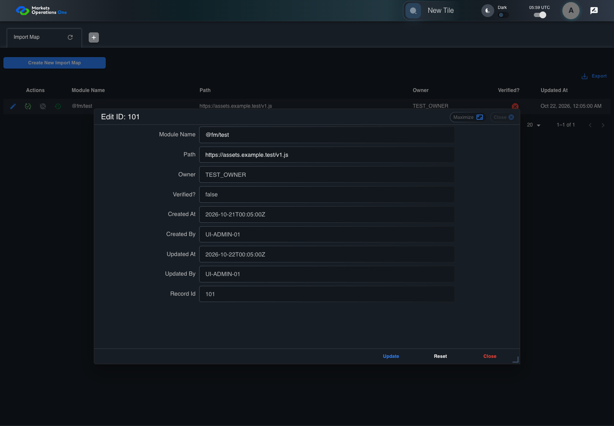
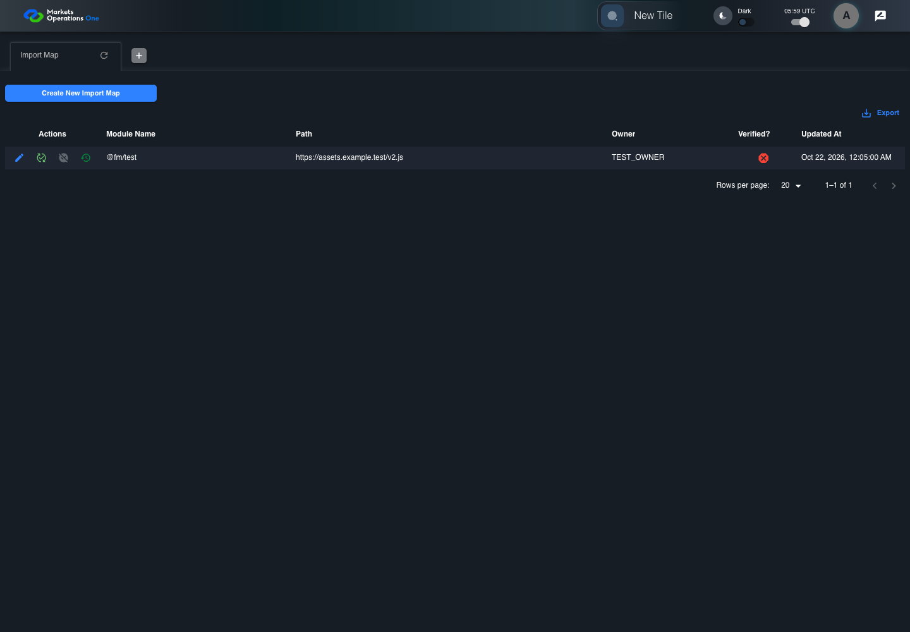

UI-ADM-MAP-005 actual administration UI with step evidence
PASS · application/run-050/ui-adm-map-005-actual-administration-ui-with-step-evidence-25710836e26f-attempt-1 · ACTUAL_APPLICATION_LOCAL_SERVICES
Actual current React administration screens. Controlled browser login supplies UI-ADMIN-01 and TEST_OWNER, or the declared SUPER_USER. Controlled BFF routes return the case-declared records. Other controlled saves persist submitted field values. This run establishes frontend handling only. It does not execute BFF validation, storage, audit generation, or authorization.
2026-10-22T05:59:25.501Z to 2026-10-22T05:59:29.671Z
Assertions and result · Artifact manifest · Exact run inputs and source hashes
Result SHA-256:6c4af79b556b0e0c2ea4a10f7f07ca0e0762050702baa0ad35df6f11c7347f2fMachine observations
- ui-origin-admin-requests.json
350af66952ac43aab878bc2da81adc65cdcbcfc5649bb4fa784ebd052e0285ef
Screenshot capture: CAPTURED. Named frames: 10.
Step screenshot evidence: COMPLETE. 9/9 canonical steps have execution screenshots.
Canonical step timeline
Given Admin A is authenticated as fixture UI-ADMIN-01 with the case-specific permissions
Execution: PASSED.1. step-01 Visible state after step 1: Given Admin A is authenticated as fixture UI-ADMIN-01 with the case-specific permissions
2026-10-22T05:59:27.191Z · 1440×1000
Step: /Users/lushevol/code/github/ratan-release-impact/workbench/tasks/ui-test-coverage-20261022/test-cases.md:8277
SHA-256:892f1c63eec7963bc919eb288d84044e84511122f56ec78f373d8c2e41c1018dAnd the Import Map admin screen is open for UI-ADMIN-01; fixture record 101 is inactive and has Path https://assets.example.test/v1.js; its owner is TEST_OWNER; the update response returns record 101 with Path https://assets.example.test/v2.js
Execution: PASSED.2. step-02 Visible state after step 2: And the Import Map admin screen is open for UI-ADMIN-01; fixture record 101 is inactive and has Path https://assets.example.test/v1.js; its owner is TEST_OWNER; the update response returns record 101 with Path https://assets.example.test/v2.js
2026-10-22T05:59:28.079Z · 1440×1000
Step: /Users/lushevol/code/github/ratan-release-impact/workbench/tasks/ui-test-coverage-20261022/test-cases.md:8278
SHA-256:60f8314dcdf27e175b2cf661e1a9fc972d2ce8550d3f2ac9465a8cf93577fe80When Admin A clicks icon button named "Edit" inside row with Record Id "101" in the "Import Map" administration data grid
Execution: PASSED.
3. step-03 Visible state after step 3: When Admin A clicks icon button named "Edit" inside row with Record Id "101" in the "Import Map" administration data grid
2026-10-22T05:59:28.311Z · 1440×1000
Step: /Users/lushevol/code/github/ratan-release-impact/workbench/tasks/ui-test-coverage-20261022/test-cases.md:8279
SHA-256:9e334a85a7b20d4be51679c44160666d20490688a1ac186b1f4a9311f0a1bdeeAnd Admin A replaces the value of textbox named "Path" inside the dialog named "edit ID: 101" inside the "Import Map" administration tabpanel with "https://assets.example.test/v2.js"
Execution: PASSED.4. step-04 Visible state after step 4: And Admin A replaces the value of textbox named "Path" inside the dialog named "edit ID: 101" inside the "Import Map" administration tabpanel with "https://assets.example.test/v2.js"
2026-10-22T05:59:28.394Z · 1440×1000
Step: /Users/lushevol/code/github/ratan-release-impact/workbench/tasks/ui-test-coverage-20261022/test-cases.md:8280
SHA-256:2452a37bed4b11711db78d53f7ce2dd77d906329a87cee1e56b02f027748b93dAnd the declared controlled field clock advances by 300 milliseconds
Execution: PASSED.5. step-05 Visible state after step 5: And the declared controlled field clock advances by 300 milliseconds
2026-10-22T05:59:28.675Z · 1440×1000
Step: /Users/lushevol/code/github/ratan-release-impact/workbench/tasks/ui-test-coverage-20261022/test-cases.md:8281
SHA-256:af71deca63fe96dbf4ac0093f00fe2dfc33d14a286e77bdd865b21ee4d503688And Admin A clicks button named "Update" inside the dialog named "edit ID: 101" inside the "Import Map" administration tabpanel
Execution: PASSED.6. step-06 Visible state after step 6: And Admin A clicks button named "Update" inside the dialog named "edit ID: 101" inside the "Import Map" administration tabpanel
2026-10-22T05:59:28.863Z · 1440×1000
Step: /Users/lushevol/code/github/ratan-release-impact/workbench/tasks/ui-test-coverage-20261022/test-cases.md:8282
SHA-256:d2eeae68d0deaac4a903de29d2a28fbbd30b21ab041286b1dc1eade591ecb042Then cell named "Path" inside row with Record Id "101" in the "Import Map" administration data grid displays "https://assets.example.test/v2.js"
Execution: PASSED.
7. step-07 Visible state after step 7: Then cell named "Path" inside row with Record Id "101" in the "Import Map" administration data grid displays "https://assets.example.test/v2.js"
2026-10-22T05:59:28.981Z · 1440×1000
Step: /Users/lushevol/code/github/ratan-release-impact/workbench/tasks/ui-test-coverage-20261022/test-cases.md:8283
SHA-256:d2eeae68d0deaac4a903de29d2a28fbbd30b21ab041286b1dc1eade591ecb042And the data row count in data grid with source identity "administration records" inside the "Import Map" administration tabpanel equals its pre-action count
Execution: PASSED.
8. step-08 Visible state after step 8: And the data row count in data grid with source identity "administration records" inside the "Import Map" administration tabpanel equals its pre-action count
2026-10-22T05:59:29.063Z · 1440×1000
Step: /Users/lushevol/code/github/ratan-release-impact/workbench/tasks/ui-test-coverage-20261022/test-cases.md:8284
SHA-256:d2eeae68d0deaac4a903de29d2a28fbbd30b21ab041286b1dc1eade591ecb042And dialog named "edit ID: 101" inside the "Import Map" administration tabpanel is absent
Execution: PASSED.
9. step-09 Visible state after step 9: And dialog named "edit ID: 101" inside the "Import Map" administration tabpanel is absent
2026-10-22T05:59:29.130Z · 1440×1000
Step: /Users/lushevol/code/github/ratan-release-impact/workbench/tasks/ui-test-coverage-20261022/test-cases.md:8285
SHA-256:981b44ac4f1428fea42e47281daf9ef4227f887667ce2fc174ed6512972061bc
Additional named frames

The final visible state after the named test assertions.
2026-10-22T05:59:29.248Z · 1440×1000Step: Test source: /Users/lushevol/code/github/ratan-release-impact/workbench/e2e/audit-specs/admin-expanded.spec.ts:15
SHA-256:
981b44ac4f1428fea42e47281daf9ef4227f887667ce2fc174ed6512972061bcScreenshots establish visible state only. Assertions and traces support functional claims.